| Pin | Description |
|---|---|
| 1+ | Positive 1 |
| 1- | Negative 1 |
| 2+ | Positive 2 |
| 2- | Negative 2 |
Mini-DIN 4-pin
S-Video
| Pin | Description |
|---|---|
| 1 | Ground (Y) |
| 2 | Ground (C) |
| 3 | Luminance (Y) |
| 4 | Chrominance (C) |
Apple Desktop Bus
| Pin | Description |
|---|---|
| 1 | ADB bidirectional data |
| 2 | Power switch |
| 3 | Power +5V |
| 4 | Ground |
DIN 5-pin
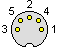
Unbalanced Audio
| Pin | Description |
|---|---|
| 1 | Signal Input (Left channel) |
| 2 | Ground |
| 3 | Signal Output (Left channel) |
| 4 | Signal Input (Right channel) |
| 5 | Signal Output (Right channel) |
MIDI
| Pin | Description |
|---|---|
| 1 | Not connected |
| 2 | Shield (input)/Ground (output) |
| 3 | Not connected |
| 4 | Signal (source on input, sink on output) |
| 5 | Signal (sink on input, source on output) |
Mini-DIN 6-pin
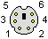
PS/2
| Pin | Description |
|---|---|
| 1 | Key data (keyboard), Button/Position data (mouse) |
| 2 | not connected |
| 3 | Ground |
| 4 | Power, +5V |
| 5 | Clock |
| 6 | not connected |
DIN 7-pin

Image credit to captain18 at LiveJournal
SATA
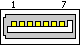
| Pin | Description |
|---|---|
| 1 | Ground |
| 2 | Transmit+ (data) |
| 3 | Transmit- (data) |
| 4 | Ground |
| 5 | Receive+ (data) |
| 6 | Receive- (data) |
| 7 | Ground |
eSATA
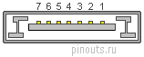
| Pin | Description |
|---|---|
| 1 | Ground |
| 2 | Transmit+ (data) |
| 3 | Transmit- (data) |
| 4 | Ground |
| 5 | Receive+ (data) |
| 6 | Receive- (data) |
| 7 | Ground |
8-pin EIAJ
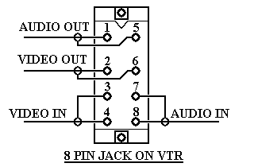
Image credit to Lab Guy's World
| Pin | Description |
|---|---|
| 1 | Audio out |
| 2 | Video out |
| 3 | Video in |
| 4 | Video in |
| 5 | Audio out |
| 6 | Video out |
| 7 | Audio in |
| 8 | Audio in |
Mini-DIN 8-pin
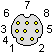
Apple RS-422
| Pin | Description |
|---|---|
| 1 | Output Handshake |
| 2 | Input Handshake or External Clock |
| 3 | Transmit- (data) |
| 4 | Ground |
| 5 | Receive data- (data) |
| 6 | Transmit data+ (data) |
| 7 | General Purpose Input |
| 8 | Receive data- (data) |
DE-9
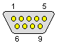
RS-232
| Pin | Description |
|---|---|
| 1 | Carrier detect |
| 2 | Receive data |
| 3 | Transmit data |
| 4 | Data terminal ready |
| 5 | Ground |
| 6 | Data set ready |
| 7 | Request to send |
| 8 | Clear to send |
| 9 | Ring indicator |
Sony 9-pin RS-422 VTR protocol
| Pin | Description |
|---|---|
| 1 | Frame ground |
| 2 | Transmit A |
| 3 | Receive B |
| 4 | Receive common |
| 5 | spare/ground |
| 6 | Transmit common |
| 7 | Transmit B |
| 8 | Receive A |
| 9 | Frame ground |
Mini-VGA
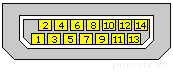
| Pin | VGA input | Video output |
|---|---|---|
| 1 | Ground | Ground |
| 2 | Vertical Sync | not used |
| 3 | Horizontal Sync | not used |
| 4 | Red return | Ground |
| 5 | Red video | S-Video Chroma (C) |
| 6 | Green return | Ground |
| 7 | Green video | S-Video Luma (Y) |
| 8 | Power +5V | Power +5V |
| 9 | Blue video | Composite video |
| 10 | DDC data | DDC data |
| 11 | DDC clock | DDC clock |
| 12 | Ground | |
| 13 | Cable detect | Cable detect |
| 14 | Blue return | Ground |
DA-15
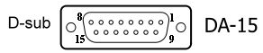
Joystick Connector
{kind=link}
| Pin | Signal name | Description |
|---|---|---|
| 1 | +5v | Power |
| 2 | A Right Button | Joystick/A Right Button |
| 3 | A / X-position | Joystick/A X-Coordinate |
| 4 | Signal GND | Ground |
| 5 | Signal GND | Ground |
| 6 | A / Y-position | Joystick/A Y-Coordinate |
| 7 | A Left Button | Joystick/A Left Button |
| 8 | +5v | Power |
| 9 | +5v | Power |
| 10 | B Right Button | Joystick/B Right Button |
| 11 | B / X-position | Joystick/B X-Coordinate |
| 12 | MIDI Out | MIDI Output |
| 13 | B / Y-position | Joystick/B Y-Coordinate |
| 14 | B Left Button | Joystick/B Left Button |
| 15 | MIDI In | MIDI Input |
DA-15 had highly varied pinouts depending on the specific peripheral in question. See this webpage/a> for more options.
DE-15
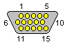
VGA
| Pin | Description |
|---|---|
| 1 | Red video |
| 2 | Green video |
| 3 | Blue video |
| 4 | reserved |
| 5 | Ground |
| 6 | Red ground |
| 7 | Green ground |
| 8 | Blue ground |
| 9 | Key (no pin)/Optional +5V power output |
| 10 | Sync ground |
| 11 | Monitor ID Bit 0 (optional) |
| 12 | I2C bidirectional data |
| 13 | Horizontal Sync |
| 14 | Vertical Sync |
| 15 | I2C data clock |
USB
USB 2.0
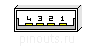 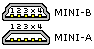 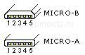
| Pin | Type A/Type B | Mini-A/Mini-B | Micro-A/Micro-B |
|---|---|---|---|
| 1 | Power +5V | Power +5V | Power +5V |
| 2 | Data - | Data - | Data - |
| 3 | Data + | Data + | Data + |
| 4 | Ground | Ground/Attached device indicator/not connected | Ground/attached device indicator/ground |
| 5 | Ground | Ground |
USB 3.0
 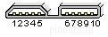
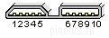
| Pin | Type A | Type B | Powered B | Micro-B |
|---|---|---|---|---|
| 1 | Power +5V | Power +5V | Power +5V | Power +5V |
| 2 | Data - (2.0 speed) | Data - (2.0 speed) | Data - (2.0 speed) | Data - (2.0 speed) |
| 3 | Data + (2.0 speed) | Data + (2.0 speed) | Data + (2.0 speed) | Data + (2.0 speed) |
| 4 | Ground (power) | Ground (power) | Ground (power) | ID configuration line |
| 5 | RX- (Superspeed receiver) | TX- | TX- | Ground |
| 6 | RX+ (Superspeed receiver) | TX+ | TX+ | TX- |
| 7 | Ground (signal) | Ground (signal) | Ground (signal) | TX+ |
| 8 | TX- (Superspeed transmitter) | RX- | RX- | Ground |
| 9 | TX+ (Superspeed transmitter) | RX+ | RX+ | RX- |
| 10 | Power provided by device | RX+ | ||
| 11 | Ground for power provided by device |
USB 3.1
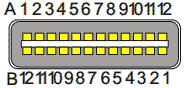
| Pin | Type C |
|---|---|
| A1 | Ground |
| A2 | TX1+ (Superspeed transmitter) |
| A3 | TX1- (Superspeed transmitter) |
| A4 | Power |
| A5 | CC1 (orientation configuration information) |
| A6 | Data+ (2.0 speed) |
| A7 | Data- (2.0 speed) |
| A8 | Secondary bus 1 |
| A9 | Power |
| A10 | RX2- (Superspeed receiver) |
| A11 | RX2+ (Superspeed receiver) |
| A12 | Ground |
| B1 | Ground |
| B2 | TX2+ (Superspeed transmitter) |
| B3 | TX2- (Superspeed transmitter) |
| B4 | Power |
| B5 | CC2 (orientation configuration information) |
| B6 | Data+ (2.0 speed) |
| B7 | Data- (2.0 speed) |
| B8 | Secondary bus 2 |
| B9 | power |
| B10 | RX1- (Superspeed receiver) |
| B11 | RX1+ (Superspeed receiver) |
| B12 | Ground |
FireWire
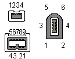
4-pin
| Pin | Description |
|---|---|
| 1 | Twisted-Pair B- (data) |
| 2 | Twisted-Pair B+ (data) |
| 3 | Twisted-Pair A- (data) |
| 4 | Twisted-Pair A+ (data) |
6-pin
| Pin | Description |
|---|---|
| 1 | Power |
| 2 | Ground |
| 3 | Twisted-Pair B- (data) |
| 4 | Twisted-Pair B+ (data) |
| 5 | Twisted-Pair A- (data) |
| 6 | Twisted-Pair A+ (data) |
9-pin
| Pin | Description |
|---|---|
| 1 | Twisted-Pair B- (data) |
| 2 | Twisted-Pair B+ (data) |
| 3 | Twisted-Pair A- (data) |
| 4 | Twisted-Pair A+ (data) |
| 5 | A shield |
| 6 | Ground |
| 7 | not used |
| 8 | Power |
| 9 | B shield |
Mini-DVI
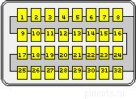
| Pin | Description |
|---|---|
| 1 | Data 2+ |
| 2 | Data 2- |
| 3 | Data 1 + |
| 4 | Data 1 - |
| 5 | Data 0 + |
| 6 | Data 0 - |
| 7 | Clock + |
| 8 | Clock - |
| 9, 10, 11, 12, 13, 14, 15, 16 | Digital Signal Ground |
| 17 | Power +5V |
| 18 | DCC data |
| 19 | not used |
| 20 | Analog Blue |
| 22 | Analog Green |
| 21, 23 | not used |
| 24 | Analog Red |
| 25 | Detect |
| 26 | DCC clock |
| 27 | not used |
| 28, 30, 32 | Digital Signal Ground |
| 29 | Analog Horizontal Sync |
| 31 | Analog Vertical Sync |
DVI
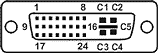
| Pin | Description |
|---|---|
| 1 | Data 2- |
| 2 | Data 2+ |
| 3 | Data 2/4 shield |
| 4 | Data 4- |
| 5 | Data 4+ |
| 6 | DDC clock |
| 7 | DDC data |
| 8 | Analog Vertical Sync |
| 9 | Data 1- |
| 10 | Data 1+ |
| 11 | Data 1/3 shield |
| 12 | Data 3- |
| 13 | Data 3+ |
| 14 | Power +5V |
| 15 | Ground |
| 16 | Detect |
| 17 | Data 0- |
| 18 | Data 0+ |
| 19 | Data 0/5 shield |
| 20 | Data 5- |
| 21 | Data 5+ |
| 22 | Clock shield |
| 23 | Clock + |
| 24 | Clock - |
| C1 | Analog Red |
| C2 | Analog Green |
| C3 | Analog Blue |
| C4 | Analog Horizontal Sync |
| C5 | Analog Ground |
DisplayPort
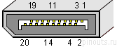 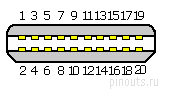
| Pin | DisplayPort (Full) | Mini DisplayPort |
|---|---|---|
| 1 | Main Lane 0+ (data) | Ground |
| 2 | Ground | Detect |
| 3 | Main Lane 0- (data) | Main Lane 0- (data) |
| 4 | Main Lane 1+ (data) | Ground |
| 5 | Ground | Main Lane 0+ (data) |
| 6 | Main Lane 1- (data) | Ground |
| 7 | Main Lane 2+ (data) | Ground |
| 8 | Ground | Ground |
| 9 | Main Lane 2- (data) | Main Lane 1+ (data) |
| 10 | Main Lane 3+ (data) | Main Lane 3+ (data) |
| 11 | Ground | Main Lane 1- (data) |
| 12 | Main Lane 3- (data) | Main Lane 3- (data) |
| 13 | Ground | Ground |
| 14 | Ground | Ground |
| 15 | Auxiliary Channel + | Main Lane 2+ (data) |
| 16 | Ground | Auxiliary Channel + |
| 17 | Auxiliary Channel - | Main Lane 2- (data) |
| 18 | Detect | Auxiliary Channel - |
| 19 | Return for Power | Ground |
| 20 | Power | Power |
HDMI
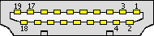 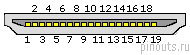 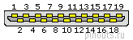
| Pin | Type A (Full) | Type C (Mini) | Type D (Micro) |
|---|---|---|---|
| 1 | Data2 + | Data2 shield | detect |
| 2 | Data2 shield | Data2 + | not connected |
| 3 | Data2 - | Data2 - | Data2 + |
| 4 | Data1 + | Data1 shield | Data2 shield |
| 5 | Data1 shield | Data1 + | Data2 - |
| 6 | Data1 - | Data1 - | Data1 + |
| 7 | Data0 + | Data0 shield | Data1 shield |
| 8 | Data0 shield | Data0 + | Data1 - |
| 9 | Data0 - | Data0 - | Data0 + |
| 10 | Clock + | Clock shield | Data0 shield |
| 11 | Clock shield | Clock + | Data0 - |
| 12 | Clock - | Clock - | Clock + |
| 13 | control | DDC ground | Clock shield |
| 14 | not connected | control | Clock - |
| 15 | DDC clock | DDC clock | control |
| 16 | DDC data | DDC data | DDC ground |
| 17 | DDC ground | HEC+/not connected | DDC clock |
| 18 | Power +5V | Power +5V | DDC data |
| 19 | detect | HEC-/not connected | Power +5V |
SCART
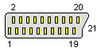
| Pin | Description |
|---|---|
| 1 | Audio Out right |
| 2 | Audio In right |
| 3 | Audio Out left (+ Mono) |
| 4 | Audio Ground |
| 5 | RGB Blue ground |
| 6 | Audio In left (+ Mono) |
| 7 | RGB Blue in |
| 8 | Switch control (Audio/RGB) |
| 9 | RGB Green ground |
| 10 | Clockpulse out |
| 11 | RGB Green in |
| 12 | Data out |
| 13 | RGB Red ground |
| 14 | Data ground |
| 15 | RGB Red in/S-Video Chroma (C) |
| 16 | Blanking signal |
| 17 | Composite Video ground or S-Video Luma ground |
| 18 | Blanking signal ground |
| 19 | Composite video out |
| 20 | Composite video in / S-Video Luma / RGB Sync |
| 21 | Ground/shield (chassis) |
DB-25
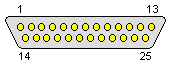
Parallel SCSI
| Pin | Description |
|---|---|
| 1 | Request |
| 2 | Message |
| 3 | Input/Output |
| 4 | Reset |
| 5 | Acknowledge |
| 6 | Busy |
| 7 | not used |
| 8 | Data Bus 0 |
| 9 | not used |
| 10 | Data Bus 3 |
| 11 | Data Bus 5 |
| 12 | Data Bus 6 |
| 13 | Data Bus 7 |
| 14 | not used |
| 15 | Control |
| 16 | not used |
| 17 | Attention |
| 18 | not used |
| 19 | Select |
| 20 | Data Parity |
| 21 | Data Bus 1 |
| 22 | Data Bus 2 |
| 23 | Data Bus 4 |
| 24 | not used |
| 25 | Termination Power |
Parallel/Printer Port
| Pin | Description |
|---|---|
| 1 | Strobe |
| 2 | Data Bit 0 |
| 3 | Data Bit 1 |
| 4 | Data Bit 2 |
| 5 | Data Bit 3 |
| 6 | Data Bit 4 |
| 7 | Data Bit 5 |
| 8 | Data Bit 6 |
| 9 | Data Bit 7 |
| 10 | Acknowledge |
| 11 | Busy |
| 12 | Paper Out |
| 13 | Select |
| 14 | Autofeed |
| 15 | Error |
| 16 | Reset |
| 17 | Select |
| 18 | Signal Ground |
| 19 | Signal Ground |
| 20 | Signal Ground |
| 21 | Signal Ground |
| 22 | Signal Ground |
| 23 | Signal Ground |
| 24 | Signal Ground |
| 25 | Signal Ground |
Serial RS-232 Devices
RS-232 serial device pinouts could vary wildly depending on the specific device in question. Consult this webpage for examples.